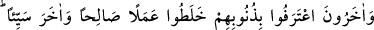
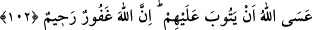

kaldı. Onların halini ve münâfıklıklarını sen bilemezsin. “Onları” onların münâfık
olduklarını “biz biliriz.” sırlarına biz muttali oluruz. Senden durumlarını gizlemeye
güçleri yetse bile bize bunu asla yapamazlar.
“Onlara iki kere azâb edeceğiz,” Rivayet edildiğine göre Peygamber Efendimiz
(a.s.) bir cuma günü hutbeye çıktı ve: “Çık ey falan! Çünkü sen münâfıksın. Çık ey
falan! Çünkü sen münâfıksın...” buyurarak bir grup insanı mescidden çıkardı.[253]
Böylece onları rezil ve rüsvay etti. İşte bu, onların gördüğü birinci azaptır. İkinci azap
ise, kabir azabıdır. Eserde geldiğine göre münâfık bir kimseye kırk gün sual sorulur,
fakat o bu suallerin hiçbirine cevap veremez.
“İki kere” ifadesiyle, mücerred çokluğun kastedilmiş olması da mümkündür. Tıpkı
“Sonra gözünü iki kere (yani tekrar tekrar) çevir bak...” (el-Mülk 67/4) âyetinde
olduğu gibi.
“Sonra da onlar,” kıyamet gününde “büyük azaba” cehennem azabına
“itileceklerdir.” Hakîkatte büyük azab, onların yüce dergahından uzak kalması, Hakk’a
kavuşma (likâ) ve rü’yet nuru ile aralarına perde çekilmesidir. Mahrumiyet belâsı ve
hicranın verdiği eziyetten daha büyük bir azap yoktur.
Acı olan ayrılıktan söz ediyorsun
Ne istersen yap, ancak bunu yapma!
Senden ayrı düşmekten daha acı bir şey yoktur
Sen korumaz, esirgemezsen, halimiz perişan olur
Yüz binlerce ölüm acısını elinden çekmek bile
Senden ayrı düşmeye, yüzünü görmemeye benzemez
Dünyanın cevri, cefâsı ve bütün eziyetler
Hak’tan uzak düşmek ve gafletten daha kolaydır
Çünkü bunlar geçip gider, ancak o geçmez
Devlet ona derler ki, insanın canı uyanık olsun
Sudan ayrılınca bu topraklar çoraklaşır
Uzak düşen sular da sararır, kokar, bulanır
Cehennem ayrılık yüzünden yanıp kavrulmuştur
Gençlik çağına hasret çeken ihtiyar gibi titrer
Kıvılcım gibi insanı yakan ayrılığı anlatsam kıyamete dek
Yine yüz binde birini olsun anlatamam
102. Başka bir kısmı da günahlarını itiraf ettiler, iyi amelle kötü ameli birbirine